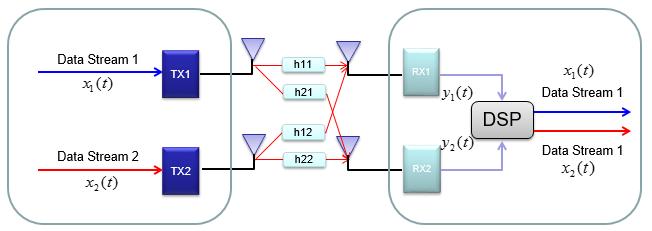
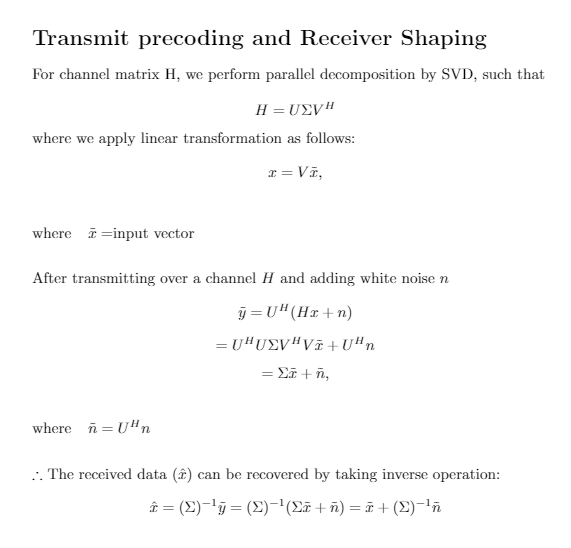

Contents
- Part 1: MIMO
- Background
- Parameter Setup
- Transmit Precoding and Receiver Shaping Scheme
- Zero Forcing Scheme
- MMSE Scheme
- MIMO BER Curves
- Part 2: OFDM
- Parameter Setup
- Zero Forcing Scheme
- MMSE Scheme
- Plot BER Curves
- Part 3: MIMO-OFDM
- Parmeter Setup
- OFDM Zero-Forcing, MIMO Precoding/Zero-Forcing/MMSE
- OFDM MMSE, MIMO Precoding/Zero-Forcing/MMSE
- Plot BER Curves
% ECE408 - Wireless Communications % Jongoh (Andy) Jeong % Project: MIMO, OFDM, MIMO-OFDM % Date: April 29, 2020 clear all; close all; clc; warning ('off','all'); % Reference: % % [1] Stuber et al. $Broadband MIMO-OFDM Wireless Communications$
Part 1: MIMO
model a 2x2 MIMO link with flat fading gains and 3 equalizer schemes: Pre-coding, Zero-forcing and MMSE Pre-coding has CSIT, where Zero-forcing and MMSE has CSIR
Background
Single-User MIMO system with 2 Tx and 2 Rx antennas are described below:

Reference: [2] https://www.sharetechnote.com/html/BasicProcedure_LTE_MIMO.html
Parameter Setup
M = 16; % modulation order k = log2(M); % coded bits per symbol nSyms = 1e3/2; % number of symbols to send nBits = nSyms * k; nChan = 3; % number of flat fading MIMO channels EbNo = -10:2:30; % Eb/No snrVector = EbNo + 10*log10(k); % Es/No before adding noise % 2 x 2 MIMO channel Mt = 2; Mr = 2; % initialize berPreCoding = zeros(nChan, length(snrVector)); berZeroForcing = zeros(nChan, length(snrVector)); berMMSE = zeros(nChan, length(snrVector));
Transmit Precoding and Receiver Shaping Scheme

Reference: Goldsmith,  [pp. 323-324]
[pp. 323-324]
% Transmit precoding: x = V*(x_hat) % Receiver shaping: (y_hat) = (U_hermitian_transposed)*y U = zeros(Mr, Mt, nBits); S = zeros(Mr, Mt, nBits); V = zeros(Mr, Mt, nBits); prefiltered = zeros(Mt, 1, nBits); txData = zeros(Mt, 1, nBits); postfiltered = zeros(Mr, 1, nBits); rxData = zeros(Mr, 1, nBits); disp('MIMO precoding'); for i = 1:nChan fprintf('Channel: %d\n',i); % unique MIMO channel for 'Mr' receive and 'Mt' transmit antennas H = ( randn(Mr, Mt, nBits) + 1j*randn(Mr, Mt, nBits) ) / sqrt(2); % generate a sequence of random message bits and QAM modulate data = randi([0 M-1], Mt, 1, nBits); dataMod = qammod(data, M); % precode for bit = 1:nBits % decompose channel matrix H by SVD [U(:,:,bit), S(:,:,bit), V(:,:,bit)] = svd(H(:,:,bit)); % pre-code data for each bit: inverting fading at transmitter (x = V * x_hat) prefiltered(:,:,bit) = V(:,:,bit) * dataMod(:,:,bit); % send over the fading channel txData(:,:,bit) = H(:,:,bit)*prefiltered(:,:,bit); end fprintf('SNR:\t'); for j = 1:length(snrVector) fprintf('%d\t',j); % add white Gaussian noise (x_noisy <-- x + noise) % for double-sided white noise, account for 1/2 in power (y_hat = U^(H) * y) noise = randn(Mr, 1, nBits) + 1j*randn(Mr, 1, nBits) / sqrt(2); txNoisy = txData + noise * 10^(-snrVector(j)/10/2); for bit = 1:nBits % post-code data for each bit: remove fading channel components postfiltered(:,:,bit) = U(:,:,bit)' * txNoisy(:,:,bit); % recover data rxData(:,:,bit) = S(:,:,bit)^-1 * postfiltered(:,:,bit); end % QAM demodulate and compute bit error rate rxData = qamdemod(rxData,M); [~,berPreCoding(i,j)] = biterr(data, rxData); end fprintf('\n'); end % take average of all 3 fading channels berPreCoding = mean(berPreCoding);
MIMO precoding Channel: 1 SNR: 1 2 3 4 5 6 7 8 9 10 11 12 13 14 15 16 17 18 19 20 21 Channel: 2 SNR: 1 2 3 4 5 6 7 8 9 10 11 12 13 14 15 16 17 18 19 20 21 Channel: 3 SNR: 1 2 3 4 5 6 7 8 9 10 11 12 13 14 15 16 17 18 19 20 21
Zero Forcing Scheme
txData = zeros(Mt, 1, nBits); rxData = zeros(Mr, 1, nBits); W = zeros(Mr, Mt, nBits); disp('MIMO zero forcing'); for i = 1:nChan fprintf('Channel: %d\n',i); % unique MIMO channel for 'Mr' receive and 'Mt' transmit antennas H = ( randn(Mr, Mt, nBits) + 1j*randn(Mr, Mt, nBits) ) / sqrt(2); % generate a sequence of random message bits and QAM modulate data = randi([0 M-1], Mt, 1, nBits); dataMod = qammod(data, M); for bit = 1:nBits % send over the fading channel txData(:,:,bit) = H(:,:,bit) * dataMod(:,:,bit); end fprintf('SNR:\t'); for j = 1:length(snrVector) fprintf('%d\t',j); % add white Gaussian noise (x_noisy <-- x + noise) % for double-sided white noise, account for 1/2 in power (y_hat = U^(H) * y) noise = randn(Mr, 1, nBits) + 1j*randn(Mr, 1, nBits) / sqrt(2); txNoisy = txData + noise * 10^(-snrVector(j)/10/2); for bit = 1:nBits % (1) W_{zf} = H_{Pseudoinverse} = (H^{H} * H)^{-1} * H^{H} W(:,:,bit) = (H(:,:,bit)' * H(:,:,bit))^-1 * H(:,:,bit)'; rxData(:,:,bit) = W(:,:,bit) * txNoisy(:,:,bit); % (2) or simply solve linear system H*x = y for x, if full rank % rxData(:,:,bit) = H(:,:,bit) \ txNoisy(:,:,bit); end % QAM demodulate and compute bit error rate rxData = qamdemod(rxData,M); [~,berZeroForcing(i,j)] = biterr(data, rxData); end fprintf('\n'); end % take average of all 3 fading channels berZeroForcing = mean(berZeroForcing);
MIMO zero forcing Channel: 1 SNR: 1 2 3 4 5 6 7 8 9 10 11 12 13 14 15 16 17 18 19 20 21 Channel: 2 SNR: 1 2 3 4 5 6 7 8 9 10 11 12 13 14 15 16 17 18 19 20 21 Channel: 3 SNR: 1 2 3 4 5 6 7 8 9 10 11 12 13 14 15 16 17 18 19 20 21
MMSE Scheme
txData = zeros(Mt, 1, nBits); rxData = zeros(Mr, 1, nBits); W = zeros(Mr, Mt, nBits); disp('MIMO MMSE'); for i = 1:nChan fprintf('Channel: %d\n',i); % unique MIMO channel for 'Mr' receive and 'Mt' transmit antennas H = ( randn(Mr, Mt, nBits) + 1j*randn(Mr, Mt, nBits) ) / sqrt(2); % generate a sequence of random message bits and QAM modulate data = randi([0 M-1], Mt, 1, nBits); dataMod = qammod(data, M); for bit = 1:nBits % send over the fading channel txData(:,:,bit) = H(:,:,bit) * dataMod(:,:,bit); end fprintf('SNR:\t'); for j = 1:length(snrVector) fprintf('%d\t',j); % add white Gaussian noise (x_noisy <-- x + noise) % for double-sided white noise, account for 1/2 in power (y_hat = U^(H) * y) noise = randn(Mr, 1, nBits) + 1j*randn(Mr, 1, nBits) / sqrt(2); txNoisy = txData + noise * 10^(-snrVector(j)/10/2); for bit = 1:nBits % add noise variations before taking inverse of the first parenthesis W(:,:,bit) = (H(:,:,bit)' * H(:,:,bit) + ... + eye(Mt)*10^(-snrVector(j)/10/2) ... )^-1 * H(:,:,bit)'; rxData(:,:,bit) = W(:,:,bit) * txNoisy(:,:,bit); end % QAM demodulate and compute bit error rate rxData = qamdemod(rxData,M); [~,berMMSE(i,j)] = biterr(data, rxData); end fprintf('\n'); end % take average of all 3 fading channels berMMSE = mean(berMMSE);
MIMO MMSE Channel: 1 SNR: 1 2 3 4 5 6 7 8 9 10 11 12 13 14 15 16 17 18 19 20 21 Channel: 2 SNR: 1 2 3 4 5 6 7 8 9 10 11 12 13 14 15 16 17 18 19 20 21 Channel: 3 SNR: 1 2 3 4 5 6 7 8 9 10 11 12 13 14 15 16 17 18 19 20 21
MIMO BER Curves
figure; semilogy(EbNo, berPreCoding,'-o', ... EbNo, berZeroForcing ,'-v', ... EbNo, berMMSE,'-s','LineWidth',1); grid on; xlim([EbNo(1)-2 EbNo(end)+2]); title(sprintf('%d Tx x %d Rx MIMO: BER Curves by Equalizer, M = %d QAM', Mt, Mr, M)); set(gca, 'FontWeight','bold','LineWidth',1); xlabel('Eb/No (dB)'); ylabel('Bit Error Rate (avg over 3 flat fading channels)'); legend('Pre-Coding','Zero Forcing','MMSE'); snapnow;

Part 2: OFDM
Reference:
- mmse equalizer: [3] https://www.researchgate.net/publication/313955547_Performance_of_MMSE_channel_equalization_for_MIMO_OFDM_system
- 801.11a: [4] http://rfmw.em.keysight.com/wireless/helpfi0les/89600b/webhelp/subsystems/wlan-ofdm/Content/ofdm_80211-overview.htm
[5] Goldsmith, , [p.397]
% assume perfect CSIR
Parameter Setup
% close all; clear all; clc; % warning ('off','all'); % 802.11a % >> each OFDM symbol has a total of 80 for data samples and cyclic prefix % - N = 64 subcarriers are generated, % of which 48 are used for data tx, 12 are zeroed to reduce ISI, % 4 used for pilot symbols for channel estimation; % - subcarriers are evenly spaced over 20 MHz bandwidth into 312.5 kHz % - CP: 16 samples nSubcarrier = 64; % number of subcarriers nCP = 16; % length of cyclic prefix nData = nSubcarrier - nCP; % number of subcarriers used for data nPilot = 4; % number of pilots M = 16; % modulation order: 16 (QAM) nChan = 3; % number of unique (random) Rayleigh channels nSyms = 1e3/2; % number of OFDM symbols % single Rayleigh frequency selective channel with 4 taps by 802.11a PHY standard Ts = 4e-6; % symbol time per subchannel (sampling period of channel) Fd = 0; % maximum Doppler frequency shift (Hz) tau = [0 1e-5 3.5e-5 12e-5]; % path delays for 4 paths pdb = [0 -1 -1 -3]; % average path power gains in each path h = rayleighchan(Ts, Fd, tau, pdb); h.StoreHistory = 0; h.StorePathGains = 1; h.ResetBeforeFiltering = 1; EbNo = -10:2:30; snrVector = EbNo + 10*log10(nSubcarrier/(nSubcarrier+nCP)); % initialize ber vectors berZeroForcing = zeros(nChan, length(snrVector)); berMMSE = zeros(nChan, length(snrVector));
Zero Forcing Scheme
% initialize chan = zeros(nSubcarrier+nCP, nSyms); txData = zeros(nSubcarrier+nCP, nSyms); disp('OFDM zero forcing'); for i = 1:nChan fprintf('Channel: %d\t',i); % generate a sequence of random message bits and QAM modulate msg = randi([0 M-1], 1, nData*nSyms); dataMod = qammod(msg, M); dataMod = reshape(dataMod, nData,[]); % 48 = data, 4 = pilot, rest (12) = zeros to reduce ISI frame = zeros(nSubcarrier, nSyms); randomIdx = randperm(nSubcarrier); dataIdx = randomIdx(1:nData); frame(dataIdx,:) = dataMod; % data frame(nData+1:nData+nPilot,:) = 1; % pilot dataIFFT = ifft(frame,64); % 64-point IFFT % insert cyclic prefix dataIFFTWithCP = [dataIFFT(nSubcarrier-nCP+1:nSubcarrier,:); dataIFFT]; % OFDM encode (flat fading Rayleigh channel) for k=1:nSyms chan(:,k) = filter(h,ones((nSubcarrier+nCP),1)); txData(:,k) = chan(:,k) .* dataIFFTWithCP(:,k); end fprintf('SNR:\t'); for j = 1:length(snrVector) fprintf('%d\t',j); noise = (randn(nSubcarrier+nCP,nSyms)+1j*randn(nSubcarrier+nCP,nSyms)) / sqrt(2); txNoisy = txData + 10^(-snrVector(j)/10/2) * noise; % take 64-point FFT back on data + zero + pilot portion (w/o CP) rxWithoutCP = txNoisy(nCP+1:(nSubcarrier+nCP),:); rxFFT = fft(rxWithoutCP, nSubcarrier); W = ((conj(chan(nCP+1:end,:)) .* chan(nCP+1:end,:)) ./ conj(chan(nCP+1:end,:))); ofdmZF = rxFFT ./ W; ofdmRxData = ofdmZF(dataIdx,:); ofdmRxDataToDemod = reshape(ofdmRxData,1,[]); rxData = qamdemod(ofdmRxDataToDemod, M); [~, berZeroForcing(i,j)] = biterr(msg, rxData); end fprintf('\n'); end
OFDM zero forcing Channel: 1 SNR: 1 2 3 4 5 6 7 8 9 10 11 12 13 14 15 16 17 18 19 20 21 Channel: 2 SNR: 1 2 3 4 5 6 7 8 9 10 11 12 13 14 15 16 17 18 19 20 21 Channel: 3 SNR: 1 2 3 4 5 6 7 8 9 10 11 12 13 14 15 16 17 18 19 20 21
MMSE Scheme
% initialize chan = zeros(nSubcarrier+nCP, nSyms); txData = zeros(nSubcarrier+nCP, nSyms); rxData = zeros(1, nData * nSyms); disp('OFDM MMSE'); for i = 1:nChan fprintf('Channel: %d\n',i); % generate a sequence of random message bits and QAM modulate msg = randi([0 M-1], 1, nData*nSyms); dataMod = qammod(msg, M); dataMod = reshape(dataMod, nData,[]); % 48 = data, 4 = pilot, rest (12) = zeros to reduce ISI frame = zeros(nSubcarrier, nSyms); randomIdx = randperm(nSubcarrier); dataIdx = randomIdx(1:nData); frame(dataIdx,:) = dataMod; % data frame(nData+1:nData+nPilot,:) = 1; % pilot dataIFFT = ifft(frame,64); % 64-point IFFT % insert cyclic prefix dataIFFTWithCP = [dataIFFT(nSubcarrier-nCP+1:nSubcarrier,:); dataIFFT]; % OFDM encode (flat fading Rayleigh channel) for k=1:nSyms chan(:,k) = filter(h,ones((nSubcarrier+nCP),1)); txData(:,k) = chan(:,k).* dataIFFTWithCP(:,k); end fprintf('SNR:\t'); for j = 1:length(snrVector) fprintf('%d\t',j); noise = (randn(nSubcarrier+nCP,nSyms)+1j*randn(nSubcarrier+nCP,nSyms)) / sqrt(2); noiseSNR = 10^(-snrVector(j)/10/2); txNoisy = txData + noise * noiseSNR; % take 64-point FFT back on data + zero + pilot portion (w/o CP) rxWithoutCP = txNoisy(nCP+1:(nSubcarrier+nCP),:); rxFFT = fft(rxWithoutCP, nSubcarrier); W = ((conj(chan(nCP+1:end,:)) .* chan(nCP+1:end,:) + ... ones(nSubcarrier, nSyms).*noiseSNR) ./ conj(chan(nCP+1:end,:))); ofdmMMSE = rxFFT ./ W; ofdmRxData = ofdmMMSE(dataIdx,:); ofdmRxDataToDemod = reshape(ofdmRxData,1,[]); rxData = qamdemod(ofdmRxDataToDemod, M); [~, berMMSE(i,j)] = biterr(msg, rxData); end fprintf('\n'); end
OFDM MMSE Channel: 1 SNR: 1 2 3 4 5 6 7 8 9 10 11 12 13 14 15 16 17 18 19 20 21 Channel: 2 SNR: 1 2 3 4 5 6 7 8 9 10 11 12 13 14 15 16 17 18 19 20 21 Channel: 3 SNR: 1 2 3 4 5 6 7 8 9 10 11 12 13 14 15 16 17 18 19 20 21
Plot BER Curves
figure; semilogy(EbNo, mean(berZeroForcing),'-o', ... EbNo, mean(berMMSE),'-v','LineWidth',1); grid on; xlim([EbNo(1)-2 EbNo(end)+2]); title(sprintf('OFDM in Rayleigh Channel: BER Curves by Equalizers, M = %d QAM', M)); set(gca, 'FontWeight','bold','LineWidth',1); xlabel('Eb/No (dB)'); ylabel('Bit Error Rate (avg over 3 flat fading channels)'); legend('Zero Forcing','MMSE'); snapnow;

Part 3: MIMO-OFDM
% close all; clear all; clc; % warning ('off','all'); % Take the OFDM symbol and put it through a 2x2 frequency selective MIMO link. % You can assume perfect CSIT or CSIR, whichever you want. % The magic of OFDM and MIMO is the frequency selective MIMO channel % just becomes a bunch of independent flat fading MIMO channels. % assume perfect CSIR
Parmeter Setup
nChan = 3; % number of unique (random) Rayleigh channels nSyms = 1e2/2; % number of symbols to transmit M = 16; % modulation order: 16 (QAM) k = log2(M); nBits = nSyms * k; % MIMO Mt = 2; Mr = 2; % OFDM nSubcarrier = 64; % number of subcarriers nCP = 16; % length of cyclic prefix nData = nSubcarrier - nCP; % number of subcarriers used for data nPilot = 4; % number of pilots % single Rayleigh frequency selective channel with 4 taps by 802.11a PHY standard Ts = 4e-6; % symbol time per subchannel (sampling period of channel) Fd = 0; % maximum Doppler frequency shift (Hz) tau = [0 1e-5 3.5e-5 12e-5]; % path delays for 4 paths pdb = [0 -1 -1 -3]; % average path power gains in each path h = rayleighchan(Ts, Fd, tau, pdb); h.StoreHistory = 0; h.StorePathGains = 1; h.ResetBeforeFiltering = 1; % SNR EbNo = -10:2:30; snrVector = EbNo + 10*log10(k) + 10*log10(nSubcarrier/(nSubcarrier+nCP)); % initialize nMIMOequalizers = 3; berOFDMZeroForcing = zeros(nChan, length(snrVector), nMIMOequalizers); berOFDMmmse = zeros(nChan, length(snrVector), nMIMOequalizers); H = zeros(Mr, Mt, nData*nSyms*k); % order: % data src - MIMO (3) - OFDM (2) - AWGN - OFDM (2) - MIMO (3) - data sink % assume perfect CSIT; estimate CSIR
OFDM Zero-Forcing, MIMO Precoding/Zero-Forcing/MMSE
% initialize U = zeros(Mr, Mt, nData*nSyms*k); S = zeros(Mr, Mt, nData*nSyms*k); V = zeros(Mr, Mt, nData*nSyms*k); chan = zeros(nSubcarrier+nCP, nSyms); txOFDM = zeros(nSubcarrier+nCP, nSyms*k*Mt); prefiltered = zeros(Mr,1,nData*nSyms*k); txMIMO = zeros(Mr,1,nData*nSyms*k); postfiltered = zeros(Mr,1,nData*nSyms*k); rxMIMO = zeros(Mr,1,nData*nSyms*k); for i = 1:nChan fprintf('Channel: %d\t',i); % unique MIMO channel for 'Mr' receive and 'Mt' transmit antennas H = ( randn(Mr, Mt, nData*nSyms*k) + 1j*randn(Mr, Mt, nData*nSyms*k) ) / sqrt(2); % generate a sequence of random message bits and QAM modulate msg = randi([0 M-1], 1, nData*nSyms*k*Mt); bits = reshape(msg, 2, []); dataMod = qammod(bits, M); % reshape for OFDM framing txMsg = reshape(dataMod, nData,[]); % OFDM: 48 = data, 4 = pilot, rest (12) = zeros to reduce ISI randomIdx = randperm(nSubcarrier); dataIdx = randomIdx(1:nData); frame = zeros(nSubcarrier, nSyms*k*Mt); frame(dataIdx,:) = txMsg; % data frame(nData+1:nData+nPilot,:) = 1; % pilot dataIFFT = ifft(frame,64); % 64-point IFFT % OFDM: insert cyclic prefix (CP) dataIFFTWithCP = [dataIFFT(nSubcarrier-nCP+1:nSubcarrier,:); dataIFFT]; % OFDM encode (flat fading Rayleigh channel) for kk = 1:nSyms*k*Mt chan(:,kk) = filter(h,ones((nSubcarrier+nCP),1)); txOFDM(:,kk) = chan(:,kk) .* dataIFFTWithCP(:,kk); end fprintf('SNR:\t'); for j = 1:length(snrVector) fprintf('%d\t',j); % add noise from OFDM modulation noise = (randn(nSubcarrier+nCP,nSyms*k*Mt) + 1j*randn(nSubcarrier+nCP,nSyms*k*Mt)) / sqrt(2); txNoisy = txOFDM + 10^(-snrVector(j)/10/2) * noise; % OFDM: take 64-point FFT back on data + zero + pilot portion (w/o CP) rxWithoutCP = txNoisy(nCP+1:(nSubcarrier+nCP),:); rxFFT = fft(rxWithoutCP, 64); % 64-point FFT % OFDM: Equalize W = ((conj(chan(nCP+1:end,:)) .* chan(nCP+1:end,:)) ./ conj(chan(nCP+1:end,:))); ofdmZF = rxFFT ./ W; ofdmRxData = ofdmZF(dataIdx,:); % OFDM frame OFDMsym = reshape(ofdmRxData, 1, []); % prepare to send over MIMO channel txMIMOsym = reshape(OFDMsym, Mt, 1, []); % ---- MIMO precoding % precode and send over channel for bit = 1:nData*nSyms*k % decompose channel matrix H by SVD [U(:,:,bit), S(:,:,bit), V(:,:,bit)] = svd(H(:,:,bit)); % pre-code data for each bit: inverting fading at transmitter (x = V * x_hat) prefiltered(:,:,bit) = V(:,:,bit) * txMIMOsym(:,:,bit); % send over the fading channel txMIMO(:,:,bit) = H(:,:,bit)*prefiltered(:,:,bit); end % add noise from MIMO channel noiseChannel = (randn(Mr,1,nData*nSyms*k) + 1j*randn(Mr,1,nData*nSyms*k)) / sqrt(2); txMIMONoisy = txMIMO + 10^(-snrVector(j)/10/2) * noiseChannel; for bit = 1:nData*nSyms*k % post-code data for each bit: remove fading channel components postfiltered(:,:,bit) = U(:,:,bit)' * txMIMONoisy(:,:,bit); % recover data rxMIMO(:,:,bit) = S(:,:,bit)^-1 * postfiltered(:,:,bit); end rxMIMOPrecoded = rxMIMO; clear rxMIMO; % ---- MIMO zero forcing % pass through channel for bit = 1:nData*nSyms*k txMIMO(:,:,bit) = H(:,:,bit) * txMIMOsym(:,:,bit); end % add noise from MIMO channel noiseChannel = (randn(Mr,1,nData*nSyms*k) + 1j*randn(Mr,1,nData*nSyms*k)) / sqrt(2); txMIMONoisy = txMIMO + 10^(-snrVector(j)/10/2) * noiseChannel; clear W; for bit = 1:nData*nSyms*k W(:,:,bit) = (H(:,:,bit)' * H(:,:,bit))^-1 * H(:,:,bit)'; rxMIMO(:,:,bit) = W(:,:,bit) * txMIMONoisy(:,:,bit); end rxMIMOzf = rxMIMO; clear rxMIMO; % ---- MIMO MMSE % pass through channel for bit = 1:nData*nSyms*k txMIMO(:,:,bit) = H(:,:,bit) * txMIMOsym(:,:,bit); end % add noise from MIMO channel noiseChannel = (randn(Mr,1,nData*nSyms*k) + 1j*randn(Mr,1,nData*nSyms*k)) / sqrt(2); txMIMONoisy = txMIMO + 10^(-snrVector(j)/10/2) * noiseChannel; clear W; for bit = 1:nData*nSyms*k W(:,:,bit) = (H(:,:,bit)' * H(:,:,bit) + ... + eye(Mt)*10^(-snrVector(j)/10/2) ... )^-1 * H(:,:,bit)'; rxMIMO(:,:,bit) = W(:,:,bit) * txMIMONoisy(:,:,bit); end rxMIMOmmse = rxMIMO; clear rxMIMO; % QAM demodulate and compute bit error rate rxDataPC = qamdemod(rxMIMOPrecoded, M); rxDataZF = qamdemod(rxMIMOzf, M); rxDataMMSE = qamdemod(rxMIMOmmse, M); rxDataMsgPC = reshape(rxDataPC, 1, []); rxDataMsgZF = reshape(rxDataZF, 1, []); rxDataMsgMMSE = reshape(rxDataMMSE, 1, []); [~,berOFDMZeroForcing(i,j,1)] = biterr(msg, rxDataMsgPC); [~,berOFDMZeroForcing(i,j,2)] = biterr(msg, rxDataMsgZF); [~,berOFDMZeroForcing(i,j,3)] = biterr(msg, rxDataMsgMMSE); end fprintf('\n'); end berOFDMZeroForcing = mean(berOFDMZeroForcing,1); berOFDMZeroForcing = permute(berOFDMZeroForcing, [3 2 1]);
Channel: 1 SNR: 1 2 3 4 5 6 7 8 9 10 11 12 13 14 15 16 17 18 19 20 21 Channel: 2 SNR: 1 2 3 4 5 6 7 8 9 10 11 12 13 14 15 16 17 18 19 20 21 Channel: 3 SNR: 1 2 3 4 5 6 7 8 9 10 11 12 13 14 15 16 17 18 19 20 21

OFDM MMSE, MIMO Precoding/Zero-Forcing/MMSE
% initialize U = zeros(Mr, Mt, nData*nSyms*k); S = zeros(Mr, Mt, nData*nSyms*k); V = zeros(Mr, Mt, nData*nSyms*k); chan = zeros(nSubcarrier+nCP, nSyms); txOFDM = zeros(nSubcarrier+nCP, nSyms*k*Mt); prefiltered = zeros(Mr,1,nData*nSyms*k); txMIMO = zeros(Mr,1,nData*nSyms*k); postfiltered = zeros(Mr,1,nData*nSyms*k); rxMIMO = zeros(Mr,1,nData*nSyms*k); for i = 1:nChan fprintf('Channel: %d\t',i); % unique MIMO channel for 'Mr' receive and 'Mt' transmit antennas H = ( randn(Mr, Mt, nData*nSyms*k) + 1j*randn(Mr, Mt, nData*nSyms*k) ) / sqrt(2); % generate a sequence of random message bits and QAM modulate msg = randi([0 M-1], 1, nData*nSyms*k*Mt); bits = reshape(msg, 2, []); dataMod = qammod(bits, M); % reshape for OFDM framing txMsg = reshape(dataMod, nData,[]); % OFDM: 48 = data, 4 = pilot, rest (12) = zeros to reduce ISI randomIdx = randperm(nSubcarrier); dataIdx = randomIdx(1:nData); frame = zeros(nSubcarrier, nSyms*k*Mt); frame(dataIdx,:) = txMsg; % data frame(nData+1:nData+nPilot,:) = 1; % pilot dataIFFT = ifft(frame,64); % 64-point IFFT % OFDM: insert cyclic prefix (CP) dataIFFTWithCP = [dataIFFT(nSubcarrier-nCP+1:nSubcarrier,:); dataIFFT]; % OFDM encode (flat fading Rayleigh channel) for kk = 1:nSyms*k*Mt chan(:,kk) = filter(h,ones((nSubcarrier+nCP),1)); txOFDM(:,kk) = chan(:,kk) .* dataIFFTWithCP(:,kk); end fprintf('SNR:\t'); for j = 1:length(snrVector) fprintf('%d\t',j); % add noise from OFDM modulation noise = (randn(nSubcarrier+nCP,nSyms*k*Mt) + 1j*randn(nSubcarrier+nCP,nSyms*k*Mt)) / sqrt(2); noiseSNR = 10^(-snrVector(j)/10/2); txNoisy = txOFDM + noiseSNR * noise; % OFDM: take 64-point FFT back on data + zero + pilot portion (w/o CP) rxWithoutCP = txNoisy(nCP+1:(nSubcarrier+nCP),:); rxFFT = fft(rxWithoutCP, 64); % 64-point FFT % OFDM: Equalize W = ((conj(chan(nCP+1:end,:)) .* chan(nCP+1:end,:) + ... ones(nSubcarrier, nSyms*k*Mt).*noiseSNR) ./ conj(chan(nCP+1:end,:))); ofdmMMSE = rxFFT ./ W; ofdmRxData = ofdmMMSE(dataIdx,:); % OFDM frame OFDMsym = reshape(ofdmRxData, 1, []); % prepare to send over MIMO channel txMIMOsym = reshape(OFDMsym, Mt, 1, []); % ---- MIMO precoding % precode and send over channel for bit = 1:nData*nSyms*k % decompose channel matrix H by SVD [U(:,:,bit), S(:,:,bit), V(:,:,bit)] = svd(H(:,:,bit)); % pre-code data for each bit: inverting fading at transmitter (x = V * x_hat) prefiltered(:,:,bit) = V(:,:,bit) * txMIMOsym(:,:,bit); % send over the fading channel txMIMO(:,:,bit) = H(:,:,bit)*prefiltered(:,:,bit); end % add noise from MIMO channel noiseChannel = (randn(Mr,1,nData*nSyms*k) + 1j*randn(Mr,1,nData*nSyms*k)) / sqrt(2); txMIMONoisy = txMIMO + 10^(-snrVector(j)/10/2) * noiseChannel; for bit = 1:nData*nSyms*k % post-code data for each bit: remove fading channel components postfiltered(:,:,bit) = U(:,:,bit)' * txMIMONoisy(:,:,bit); % recover data rxMIMO(:,:,bit) = S(:,:,bit)^-1 * postfiltered(:,:,bit); end rxMIMOPrecoded = rxMIMO; clear rxMIMO; % ---- MIMO zero forcing % pass through channel for bit = 1:nData*nSyms*k txMIMO(:,:,bit) = H(:,:,bit) * txMIMOsym(:,:,bit); end % add noise from MIMO channel noiseChannel = (randn(Mr,1,nData*nSyms*k) + 1j*randn(Mr,1,nData*nSyms*k)) / sqrt(2); txMIMONoisy = txMIMO + 10^(-snrVector(j)/10/2) * noiseChannel; clear W; for bit = 1:nData*nSyms*k W(:,:,bit) = (H(:,:,bit)' * H(:,:,bit))^-1 * H(:,:,bit)'; rxMIMO(:,:,bit) = W(:,:,bit) * txMIMONoisy(:,:,bit); end rxMIMOzf = rxMIMO; clear rxMIMO; % ---- MIMO MMSE % pass through channel for bit = 1:nData*nSyms*k txMIMO(:,:,bit) = H(:,:,bit) * txMIMOsym(:,:,bit); end % add noise from MIMO channel noiseChannel = (randn(Mr,1,nData*nSyms*k) + 1j*randn(Mr,1,nData*nSyms*k)) / sqrt(2); txMIMONoisy = txMIMO + 10^(-snrVector(j)/10/2) * noiseChannel; clear W; for bit = 1:nData*nSyms*k W(:,:,bit) = (H(:,:,bit)' * H(:,:,bit) + ... + eye(Mt)*10^(-snrVector(j)/10/2) ... )^-1 * H(:,:,bit)'; rxMIMO(:,:,bit) = W(:,:,bit) * txMIMONoisy(:,:,bit); end rxMIMOmmse = rxMIMO; clear rxMIMO; % QAM demodulate and compute bit error rate rxDataPC = qamdemod(rxMIMOPrecoded, M); rxDataZF = qamdemod(rxMIMOzf, M); rxDataMMSE = qamdemod(rxMIMOmmse, M); rxDataMsgPC = reshape(rxDataPC, 1, []); rxDataMsgZF = reshape(rxDataZF, 1, []); rxDataMsgMMSE = reshape(rxDataMMSE, 1, []); [~,berOFDMmmse(i,j,1)] = biterr(msg, rxDataMsgPC); [~,berOFDMmmse(i,j,2)] = biterr(msg, rxDataMsgZF); [~,berOFDMmmse(i,j,3)] = biterr(msg, rxDataMsgMMSE); end fprintf('\n'); end berOFDMmmse = mean(berOFDMmmse,1); berOFDMmmse = permute(berOFDMmmse, [3 2 1]);
Channel: 1 SNR: 1 2 3 4 5 6 7 8 9 10 11 12 13 14 15 16 17 18 19 20 21 Channel: 2 SNR: 1 2 3 4 5 6 7 8 9 10 11 12 13 14 15 16 17 18 19 20 21 Channel: 3 SNR: 1 2 3 4 5 6 7 8 9 10 11 12 13 14 15 16 17 18 19 20 21
Plot BER Curves
figure('Renderer', 'painters', 'Position', [300 300 900 600]) semilogy(EbNo, berOFDMZeroForcing(1,:), '-bo', ... EbNo, berOFDMZeroForcing(2,:), '-b^', ... EbNo, berOFDMZeroForcing(3,:), '-bv', 'LineWidth',1); hold on; semilogy(EbNo, berOFDMmmse(1,:), '-ko', ... EbNo, berOFDMmmse(2,:), '-k^', ... EbNo, berOFDMmmse(3,:), '-kv', 'LineWidth',1); grid on; xlim([EbNo(1)-2 EbNo(end)+2]); legend('OFDM ZF, MIMO Precoding','OFDM ZF, MIMO Zero Forcing','OFDM ZF, MIMO MMSE', ... 'OFDM MMSE, MIMO Precoding','OFDM MMSE, MIMO Zero Forcing','OFDM MMSE, MIMO MMSE'); title(sprintf('MIMO-OFDM: BER Curves by Equalizers, M = %d QAM', M)); set(gca, 'FontWeight','bold','LineWidth',1); xlabel('Eb/No (dB)'); ylabel('Bit Error Rate (avg over 3 flat fading channels)'); snapnow;